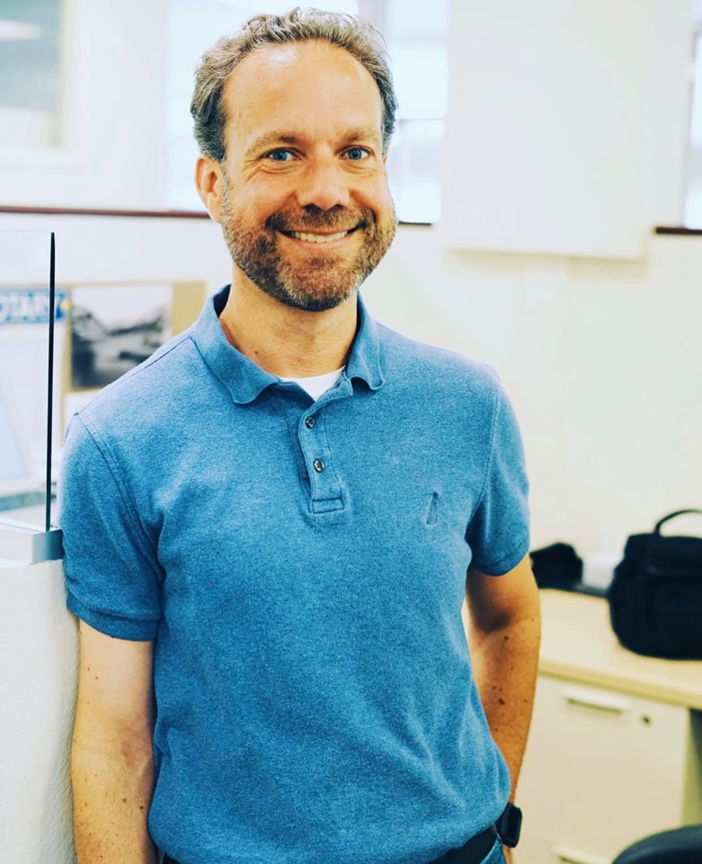

Brendan Coen

Brendan Coen is a native San Franciscan, but has spent most of his life in Sonoma County. He has spent the last 20 years as a real estate broker. Although having received a bachelor's degree in Computer Science from Sonoma State, he has always kept his toe in the tech field.
After a successful career in real estate, he is turning back to tech. While skilling up for a new job role, he'll be simultaneously freelancing as tech support in Sonoma County.
He also enjoys being involved in the community. He's on the board, and is Treasurer for the Historical Society of Santa Rosa and the Russian River Historical Society. He's been Treasurer and President of the Russian River Rotary Club, and served a 12 year term on the board of River to Coast Children's Services.
He also enjoys hiking and marathon running.
Contact information
- Email: brendan@coentropy.net
- Web: http://www.CoEntropy.net
- Telephone:+1 (707) 595-0805